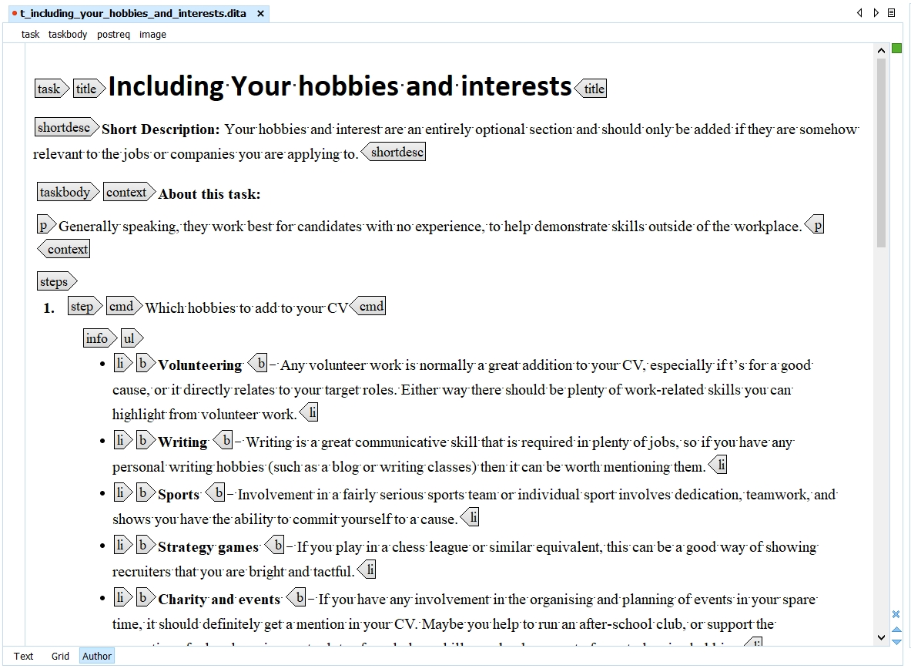
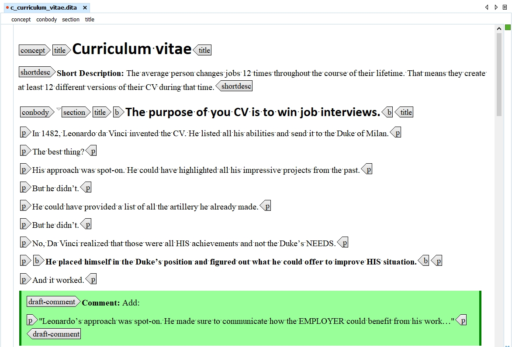
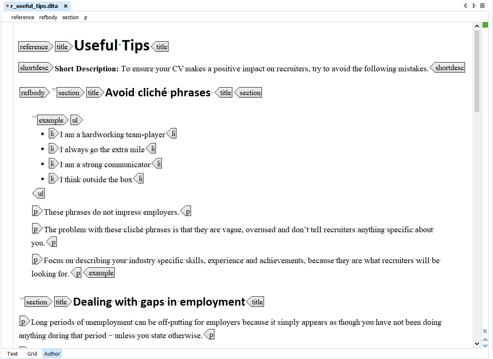
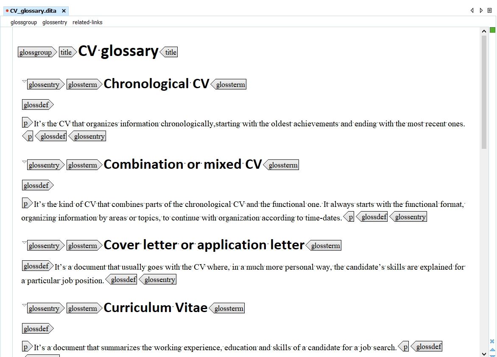
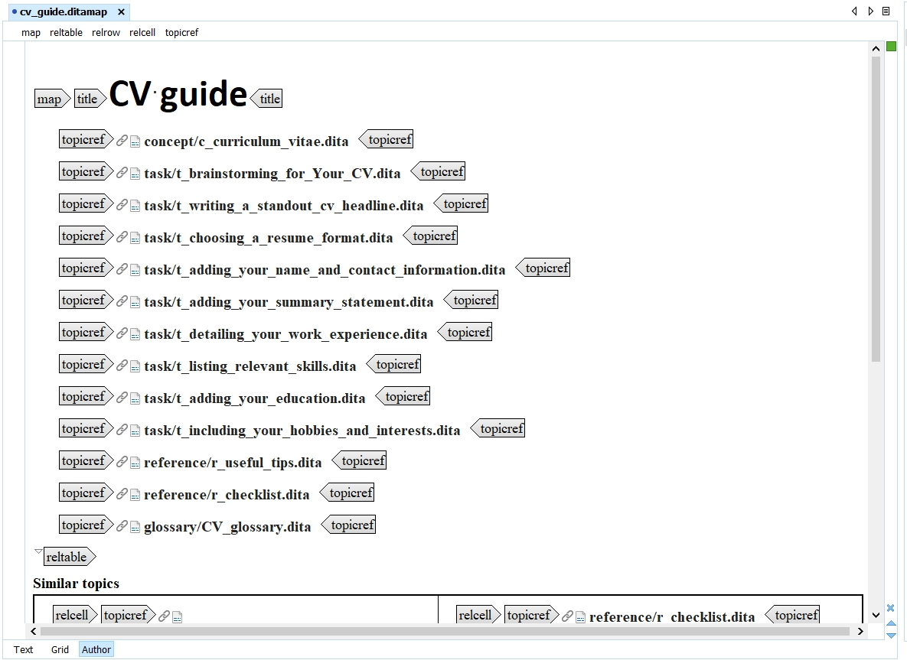
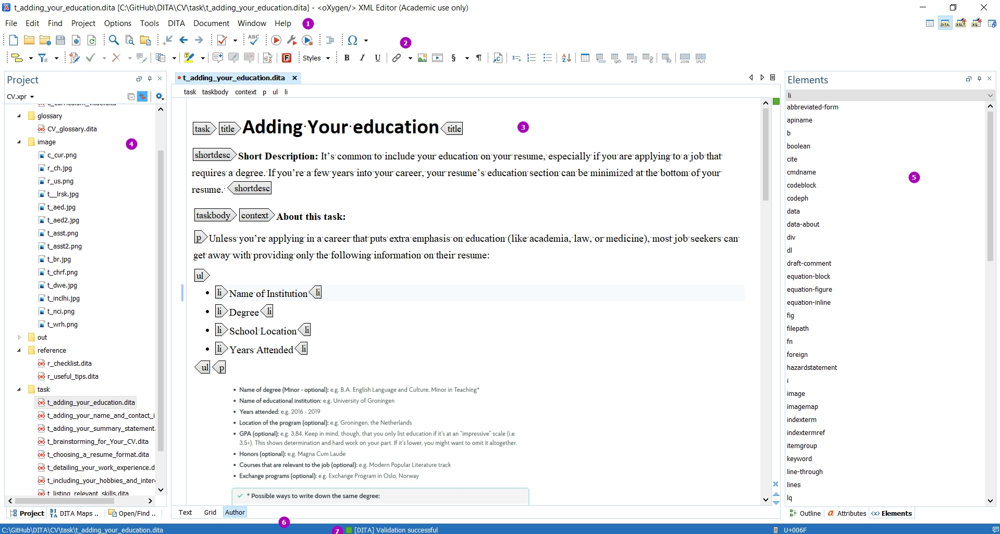

DITA and Oxygen
The Darwin Information Typing Architecture (DITA) specification defines a set of document types for authoring and organizing topic-oriented information, as well as a set of mechanisms for combining, extending, and constraining document types. It is an open standard that is defined and maintained by the OASIS DITA Technical Committee.
DITA
The name DITA derives from the following components:
- Darwin: it uses the principles of specialization and inheritance, which is in some ways analogous to the naturalist Charles Darwin’s concept of evolutionary adaptation,
- Information Typing: which means each topic has a defined primary objective (procedure, glossary entry, troubleshooting information) and structure,
- Architecture: DITA is an extensible set of structures.
Information typing
The latest version of DITA (DITA 1.3) includes five specialized topic types: Task, Concept, Reference, Glossary Entry, and Troubleshooting. Each of these five topic types is a specialization of a generic Topic type, which contains a title element, a prolog element for metadata, and a body element. The body element contains a paragraph, a table, and list elements, similar to HTML.
DITA content is created as topics, each an individual XML file. Typically, each topic covers a specific subject with a singular purpose, for example, a conceptual topic that provides an overview, or a procedural topic that explains how to accomplish a task. Content should be structured to resemble the file structure in which it is contained.
A Task topic is intended for a procedure that describes how to accomplish a task. It lists a series of steps that users follow to produce an intended outcome. The steps are contained in a taskbody element, which is a specialization of the generic body element. The steps element is a specialization of an ordered list element. 
Concept information is more objective, containing definitions, rules, and guidelines.
A Reference topic is for topics that describe command syntax, programming instructions, and other reference material, and usually contains detailed, factual material.
A Glossary Entry topic is used for defining a single sense of a given term. In addition to identifying the term and providing a definition, this topic type might also have basic terminology information, along with any acronyms or acronym expansions that may apply to the term.
Maps
A DITA map is a container for topics used to transform a collection of content into a publication. It gives the topics’ sequence and structure. A map can include relationship tables (reltables) that define hyperlinks between topics. Maps can be nested. Maps can reference topics or other maps, and can contain a variety of content types and metadata.
The Troubleshooting topic describes a condition that the reader may want to correct, followed by one or more descriptions of its cause and suggested remedies.
Metadata
DITA includes extensive metadata elements and attributes, both at topic level and within elements. Conditional text allows filtering or styling content based on attributes for audience, platform, product, and other properties. The conditional processing profile (.ditaval file) is used to identify which values are to be used for conditional processing.
oXygen XML Editor
The Oxygen XML Editor is a multi-platform XML editor, XSLT/XQuery debugger and profiler with Unicode support. It is a Java application, so it can run in Windows, Mac OS X, and Linux.
Oxygen XML offers three views designed for editing XML documents. These views are text, grid, and author.
- The text view is the default view for editing an XML document. As the name suggests, this view shows the XML text as a text.
- The grid view shows the XML document in a spreadsheet-like fashion. The left-most column shows the elements, including comments and processing instructions, at the root level. The next column shows attributes of root elements, and every unique first child of the root XML element. If the root element has six children all named “section”, then the grid view will show only one section element and a notation that there are six of them. This iteration continues for the next column.
- The author view is based on providing a CSS file for the document that specifies the data type for each element in the document’s schema. Oxygen XML comes with document CSS files for formats like DITA, DocBook, and TEI. XML tags and attributes in this view can be completely disabled or can be shown in various combinations.
oXygen interface
An introduction to the main components of the Oxygen interface.
When you open Oxygen XML Editor, you will see the editor in Text Editing Mode, as below. If instead you see the Welcome dialogue box, uncheck Show at startup in the lower left corner and click Close.
Begin by familiarizing yourself with the different sections of the Oxygen interface.
- The Menus at the top are similar to other Windows programs, although the options are different.
- The Toolbars below the Menus provide easy access to common functions. They are also fully configurable by right-clicking in an empty part of the menu bars. The image above contains several menus in addition to the default menus.
- The Editor Pane in the center of the interface allows you to work with files in three different Editing Modes, which you select at the bottom of the pane. Text mode is shown, where you can see the coding directly. Author mode provides something similar to a WYSIWYG interface, where you can see an approximation of the final appearance of page, but it is less convenient to work in when editing or proofing documents.
- The Project View in the left-hand pane is one of several different views that you can dock in place. Project View lets you see all of the files and folders in the current xml-project. By right-clicking a file or folder, you can also check validation and run transformation scenarios on the selected files.
- The Model View on the right is, again, one of several different helper views that can be docked in place or hidden from view. The Model View shows the definition of the XML element at the cursor placement. Additional views can be seen by clicking the tabs on the right.
- The Results View displays the messages generated as a result of user actions such as validations, transformations, search operations, and others. Each message is a link to the location related to the event that triggered the message. Double-clicking a message opens the file containing the location and positions the cursor at the location offset.
- The blue Status Bar at the bottom of the window includes the
following information, in the order it is displayed from left to right:
- The path of the current document.
- Information about the most recent operation, such as formatting or validating.
- The Unicode value for the character directly to the right of the current cursor position
- The status of the current document. The status of Modified is displayed for documents that have not yet been saved. Otherwise, this section is left blank.
- In Text editing mode, the current line and character position is displayed.